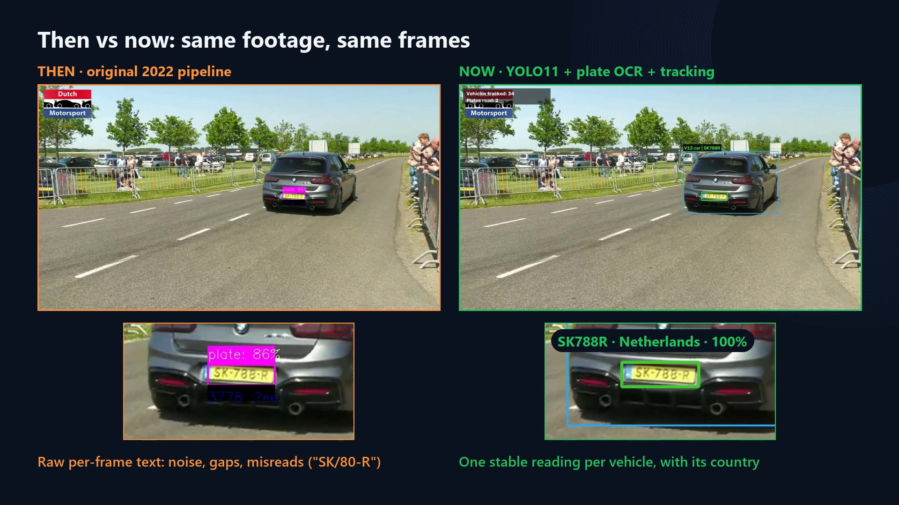
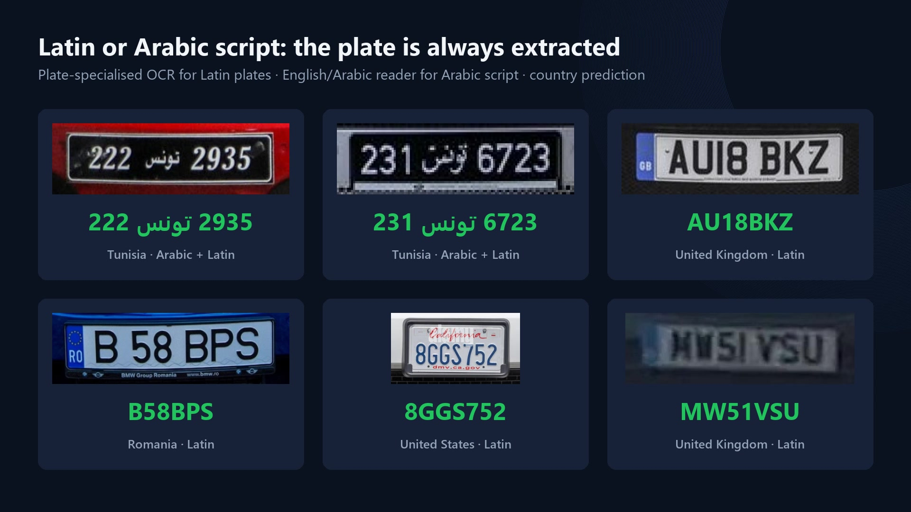
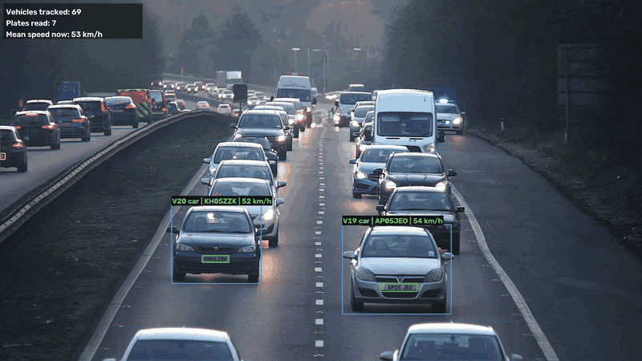
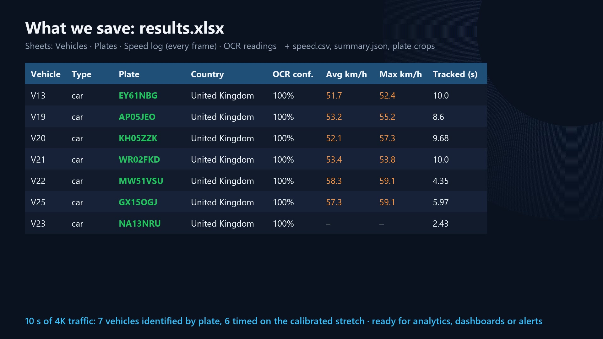
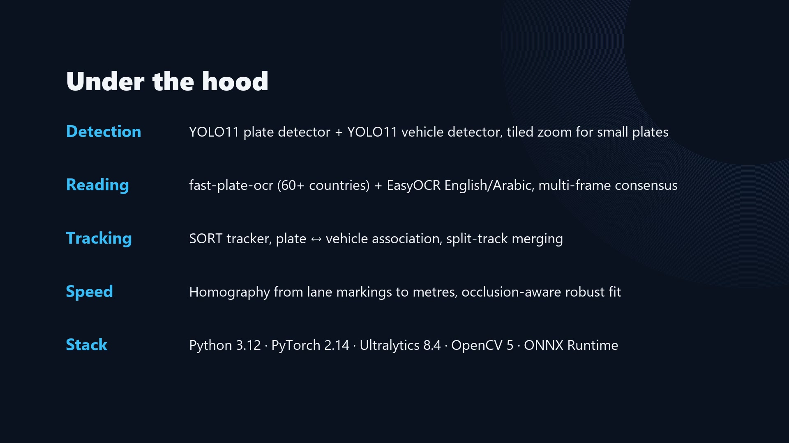

Licence Plate Recognition · v2
Four years later.
Detect, read, track and measure the speed of vehicles in images, videos, webcams and live streams. Same idea as our 2022 project, rebuilt with 2026 technology.
YOLO11Latin + Arabic OCR
Vehicle trackingSpeed estimationExcel reports
Then vs now
Same footage, same frames. The 2022 pipeline produced noisy text frame by frame; the new one gives one stable reading per vehicle, with its country.

What it does
Plate detectionYOLO11 fine-tuned on licence plates, tiled zoom for small and distant plates.
Multilingual readingLatin plates from 60+ countries with country prediction, and Arabic-script plates.
TrackingPersistent vehicle IDs and multi-frame voting for one stable reading.
Speed estimationRoad plane calibrated from lane markings, occlusion-aware fit over time.
ReportsExcel, CSV, JSON and plate crops, ready for dashboards and alerts.
Latin or Arabic script

Speed on every tracked vehicle

What gets saved
results.xlsx: Vehicles, Plates, Speed log (every frame) and OCR readings.

Under the hood

🔒 The source code is private. This page is a showcase only. For access, a demo or a
collaboration, contact Yassine Nemri or
Ihab Lamouchi.